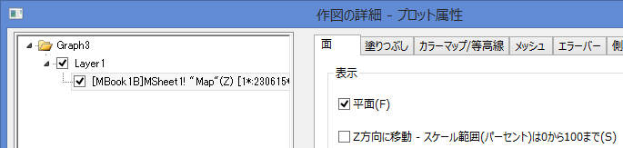

ドロップライン付き3D散布図
3D-Scatter-DropLine
このグラフは平面とラベル付きXYZ散布図を組み合わせたものです。1と0の組み合わせで作成された行列で、アメリカの地図を平面表現しています。人口の情報はドロップライン付きのXYZ散布図として表示されます。

必要なOriginのバージョン:Origin 9.0 SR0
学習する項目
このチュートリアルでは、以下の項目について解説します:
- 平面図を作図する
- 既存のグラフウィンドウに3D散布図を追加する
- ラベルを追加し、編集する
ステップ
このチュートリアルは、チュートリアルデータプロジェクト（<Origin EXE フォルダ>\Samples\TutorialData.opj）と関連しています。
- Tutorial Data.opjを開き、プロジェクト・エクスプローラ (PE)で3D
Surface with Point Label フォルダを開きます。
- Mbook1Bをアクティブにし、メインメニューから作図：3D：3Dカラーマップ曲面を選択します。グラフウィンドウが作成されます。

- グラフをダブルクリックして、作図の詳細ダイアログを開きます。面タブを開いて表示グループの平面にチェックをします。
- 
- カラーマップ/等高線タブで、色塗りヘッダをクリックして、塗り方ダイアログを開きます。このダイアログで制限つき混合を選択し、最小値と最大値を下図のように設定します。
- OKボタンを押し、塗り方ダイアログを閉じます。
- レベルヘッダをクリックして、レベルの設定ダイアログを開きます。ダイアログを以下のように設定します。
- OKボタンをクリックして、レベルの設定ダイアログを閉じます。
- メッシュタブを開き、有効にするのチェックを外します。
- OKボタンをクリックして、ダイアログを閉じます。グラフウィンドウのレイヤアイコンで右クリックを行い、コンテキストメニューからレイヤの内容を選択してレイヤ内容ダイアログを開きます。このダイアログでは左上のドロップダウンリストでフォルダ中のワークシートを選択し、左側パネルで列Dを選びます。そしてグラフタイプを3D散布図/トラジェクトリ/ベクトルにしてから、適用時に再スケールをチェックし、矢印ボタンをクリックして列Dを右側パネルに散布図として選択します。
- OK をクリックして、レイヤ内容ダイアログを閉じます。下図のグラフのように人口のデータが追加されます。
- 3D散布図上でダブルクリックして、作図の詳細（プロット属性）ダイアログを開きます。シンボルタブを開き、サイズを18に、色をPopulation列で定義されているカラーマップの通りに設定します。
- カラーマップ/等高線タブで、レベルヘッダをクリックして、レベルの設定ダイアログを開きます。レベルを以下のように設定します。
- OK をクリックして、レベルの設定ダイアログを閉じます。色塗りヘッダをクリックして、塗り方ダイアログを開きます。塗り方ダイアログで、パレットをロードラジオボタンを選択し、パレット選択ボタンをクリックして、Watermelonパレットを選びます。OKをクリックし、塗り方ダイアログを閉じます。
- レベルタブをを開き、以下のように設定します。
- 左側パネルでLayer1を選択し、右側パネルで、レイヤの大きさ・描画スピードタブを選びます。スピードモード(必要に応じてポイントスキップ)のグループ内にあるチェックをどちらも外します。
- 左側パネルでGraphレベルを選択してから右側で表示指定タブを開きます。色を明るい灰色にセットします。
-
- OKをクリックして、作図の詳細ダイアログボックスを閉じます。最終的に、次のグラフのようになります。